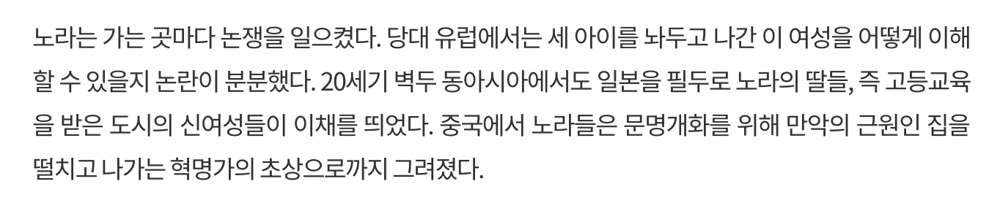

한글이 주로 사용되는 사이트들 중, 접속 통계 상위권에 있는 곳들과 개인적으로 자주 방문하는 곳를 돌아다니며, 그들이 본문에 사용하고 있는 CSS 값들에 대해 정리해보았다. CSS에서 주석에 적힌 값이 실제 CSS로 지정한 값이며, 별도의 표시가 없는 경우 계산된 값과 지정된 값이 같음을 의미한다.
이번에 사이트들을 둘러보며 아래 CSS 값들에 대해 더 알아보는 계기가 되어 좋았다. 웹에서의 타이포그래피에 관심이 있는 분들이라면 이미 알고 있다고 해도, 아래 속성들을 한 번쯤 다시 살펴보기를 추천한다.
뉴스 사이트
다음 뉴스 – https://media.daum.net/
 다음 뉴스 사이트는 본문 크기를 CSS 파일이 아닌 태그에 인라인 스타일링으로
다음 뉴스 사이트는 본문 크기를 CSS 파일이 아닌 태그에 인라인 스타일링으로 17px 로 지정한 것과, 자간만 em 단위로 지정한 것이 눈에 띈다.
서체에 대해서는 영문 서체는 특별히 신경쓰지 않고 한글 서체 내에 포함된 서체를 사용하도록 하였다.
색상은 다른 사이트들에서도 많이 사용하는 본문 색상인 #333을 사용하고 있다.
서체로 AppleSDGothicNeo-Regular가 최우선으로 지정되어 있는데, 이는 아이폰 사용자들을 의식한 결과로 생각되며,
맑은 고딕 계열을 별도로 지정하여 윈도우 사용자들을 고려하고 있음을 알 수 있다.
word-wrap / word-break 그리고 요즘의 웹사이트에서 가독성 향상의 목적으로 사용하는 웹 브라우저 렌더링 옵션 지정이 없는 것이 특이하다.
{
color : #333;
font-family : AppleSDGothicNeo-Regular, "Malgun Gothic", "맑은 고딕", dotum, 돋움, sans-serif;
font-size : 17px; /* inline style */
letter-spacing : -0.32px; /* -0.02em */
line-height : 27.625px; /* 1.625 */
}
네이버 뉴스 – https://news.naver.com/
네이버는 최근에는 잘 사용하지 않는 완전한 검정색을 본문 색상으로 사용한 것이 눈에 뛴다. 서체 지정과 크기, 자간과 행간이 다음 뉴스 사이트와 매우 유사하다. 일반적으로 정보성 글 뭉치를 읽을 때 이 정도가 표준적으로 통용될 수 있다고 생각해도 무방할 것 같다.
네이버는 모든 단위에 px를 지정해서 사용하고 있다.
{
color : #000;
font-family : "Helvetica Neue", "Apple SD Gothic Neo", "Malgun Gothic", "맑은 고딕", Dotum, 돋움, sans-serif;
font-size : 17px;
text-align : left;
letter-spacing : -0.3px;
line-height : 27px;
word-wrap : break-word;
}
네이트 뉴스 – http://news.nate.com/
네이트 뉴스는 평소에는 잘 방문하지 않지만, 위 두 뉴스 사이트를 제외한 다른 신문, 매체 사이트는 광고 때문에 본문을 읽을 엄두가 나지 않아 울며 겨자먹기로 알아보았다.
요즘의 사이트 답지 않게 굴림, 돋움만 지정하고 있으며, 서체 크기도 14px로 최근의 추세보다는 다소 작게 지정되어 있다.
다만 word-break와 word-wrap은 별도로 지정되어 있는 것이, 이 사이트를 처음 만들던 당시에 가독성에 대해 고민한 흔적으로 보인다
{
color : #222;
font-family : Gulim, Dotum, Helvetica, sans-serif ;
font-size : 14px;
letter-spacing : 0;
line-height : 23.8px; /* 1.7 */
word-break : break-all;
word-wrap : break-word;
}
읽을거리
카카오 1분이나 네이버 블로그 사이트도 알아보려고 했으나, 본문 없이 첨부 이미지로 가득차 있는 경우가 많고, 본문이 있다고 해도 강제적인 줄바꿈과 중앙 정렬을 사용하고 있어 제외했다.
브런치 – https://brunch.co.kr
개인별 호불호는 당연히 있겠지만, 브런치는 글을 읽기에 가장 불편한 사이트 중 하나라고 생각한다.
우선 Noto Sans Light와 같은 획이 얇은 서체를 본문 기본 서체로 사용하고 있고, 글씨 크기도 11pt로 작은데다,
자간을 0.8px로 지정하여 낱글자 간격이 넓어 잘 읽히지 않는다.
비교적 나중에 만들어진 사이트 답게 -webkit-font-smoothing 의 지정 등이 눈에 띈다.
{
color : #333;
font-family : "Noto Sans Light", "Malgun Gothic", sans-serif ;
font-size : 14.6667px; /* 11pt */
letter-spacing : 0.8px;
line-height : 29.3333px; /* 22pt */
text-align : left;
word-break : break-word;
word-wrap : break-word;
-webkit-font-smoothing: antialiased;
}
퍼블리 – https://publy.co/
글을 유료로 판매하는 모델을 실험하는 퍼블리는 아무래도 한글 가독성에 초점을 맞추었을 것으로 예상되었다.
다른 사이트들과 다르게 word-break: keep-all을 지정한 것이 가장 눈에 띄고,
한글 서체는 시스템 폰트를 사용하지 않고 모두 Noto Sans KR로 지정하여 사용자 경험을 기기마다 다르게 주지 않으려 한 것으로 보인다.
서체 크기가 18px로 가장 크고 keep-all을 사용하여 모바일 기기에서 줄바꿈이 심하고 줄 끝이 둘쭉날쭉 한 것이 눈에 걸린다.
{
color : #333;
font-family : "Noto Sans KR", sans-serif;
font-size : 18px; /* 1.125rem */
letter-spacing : 0; /* normal */
line-height : 32.4px; /* 1.8 */
text-align : left;
word-break : keep-all;
word-wrap : break-word;
}
핀치 – https://thepin.ch/
 여성을 위한 미디어를 표방하는 핀치는 전반적으로 색 사용이 많고, 페이지 전환시마다 그라데이션에 애니메이션 포함된 막을 사용하여 다소 정신 없다는 인상을 주는 것에 비해 본문은 얌전하고 밀도가 높다.
밀도가 높은 것은 자간을 -1px 지정하고, 양쪽 맞춤에 줄 바꿈을 브라우저 기본으로 사용했기 때문이다.
글이 빽빽한 느낌이 들어 오래 읽기에는 조금 부담스럽다.
{
color : #313233;
font-family : "Noto Sans", "Apple SD Gothic Neo", "Malgun Gothic", Dotum;
font-size : 17px;
letter-spacing : -1px;
line-height : 30.6px; /* 1.8em */
text-align : justify;
text-rendering : optimizeLegibility ;
}
인디포스트 – https://www.indiepost.co.kr/
읽어보면 좋은 글이 많고, 하단에 관련된 글들도 연관성이 높아 음악가들에 대해 알아보기 좋은 사이트라고 생각한다.
하지만 브런치와 마찬가지로 본문에 사용하는 서체의 획이 너무 얇아 읽기에 힘이 든다.
게다가 이유는 알 수 없지만, 본문에 text-shadow 를 지정하고 있다.
일반적으로 웹폰트로 많이 사용하는 Noto Sans 대신, 스포카의 Spoqa Han Sans를 사용하는 것이 눈에 띈다.
{
color : #222;
font-family : "Apple SD Gothic Neo", "Droid Sans", "Spoqa Han Sans", Arial, sans-serif ;
font-size : 16px; /* 1rem */
font-weight : 300;
line-height : 30.4px; /* 1.9rem */
word-break : keep-all;
text-rendering : optimizeLegibility ;
text-shadow : rgba(0, 0, 0, 0.004) 1px 1px 1px ;
-webkit-font-smoothing: antialiased ;
}
미디엄(Medium) – https://medium.com/
미디엄은 https://medium.design/과 https://medium.engineering을 운영하며 Typography is impossible을 쓰는 등 웹에서의 타이포그래피에 관심이 많은 서비스로 보인다.
하지만 한글과 관련된 설정이 하나도 없어 한글로 포스팅하는 경우에는 그다지 좋은 결과를 얻기는 어렵다.
본문 색상으로 rgba(0, 0, 0, 0.84)를 지정한 것이 신기하다.
{
color : rgba(0,0,0,.84);
font-family : medium-content-serif-font, Georgia, Cambria, "Times New Roman", Times, serif;
font-size : 21px;
letter-spacing : -0.063px; /* -.003em */
line-height : 33.18px; /* 1.58 */
word-break : break-word;
word-wrap : break-word;
-webkit-font-smoothing: antialiased;
font-feature-settings: normal;
text-rendering: optimizeSpeed;
}
페이스북 노트
페이스북도 긴 글을 쓰기 위한 Facebook Note 기능을 제공한다. 하지만 많이 사용하는 기능이 아니라 그런지 적용된 스타일은 많지 않다.
기본 서체가 Georgia 하나라니.
{
color : #1d2129;
font-family : Georgia, serif;
font-size : 17px;
letter-spacing : normal;
line-height : 28px;
text-align : left;
word-wrap : break-word;
white-space : pre-wrap;
-webkit-font-smoothing: antialiased;
}
리디북스 – https://ridibooks.com/
리디북스는 전용 리더를 제공하기 때문에, 책 본문을 웹 서비스로 제공하지는 않는다. 하지만 활자가 주 콘텐츠인 서비스인 만큼 책을 소개하는 페이지의 본문을 어떻게 구성하고 있을지 흥미가 있었다.
다른 무엇보다 맥에서만 기본 서체로 제공되는 Helvetica Neue를 최우선 순위로 놓은 것이, 이 페이지를 구성한 사람의 취향을 보여주는 것 같다.
후순위의 서체들도 예전부터 사용되던 Tahoma, Geneva, 돋움보다 앞에 나눔고딕, arial을 지정한 것이 서체 유행의 역사를 보는 것 같은 재미가 있다.
줄바꿈과 관련된 설정은 퍼블리와 같다. 대신 본문의 폭에 비해 서체를 작게 쓰고 있어 덜 거슬리는 편이다.
전반적으로 조판에서 사용되는 다양한 기호를 적합하게 사용하고 있지만, 제목을 인용할 때 『사피엔스』/《사피엔스》와 같이 기호를 혼용하고 있는 것은 아쉽다.
{
color : #333;
font-family : "Helvetica Neue", "Apple SD Gothic Neo", arial, 나눔고딕, "Nanum Gothic", 돋움, Dotum, Tahoma, Geneva, sans-serif ;
font-size : 13px;
letter-spacing : -0.39px; /* -.03em*/
line-height : 23.4px; /* 1.8em */
word-break : keep-all;
word-wrap : break-word;
-webkit-font-smoothing: antialiased;
}
소셜 미디어
카카오스토리나 밴드 등도 알아보고 싶었지만, 웹 서비스가 제대로 제공되지 않거나, 본문이 타이포그래피를 따질 정도로 구성되는 경우가 별로 없어 제외했다. 페이스북 타임라인이나 트위터도 긴 글이 많지 않아 속성을 알아보는데 큰 의미는 없으나, 단문을 표시하기 위해 어떤 CSS를 사용하는지 참고하면 될 것 같다.
페이스북 – https://facebook.com
{
color : #1d2129;
font-family : system-ui, -apple-system, system-ui, ".SFNSText-Regular", sans-serif;
font-size : 14px;
line-height : 19.32px; /* 1.38 */
word-wrap : break-word;
-webkit-font-smoothing: subpixel-antialiased;
}
트위터 – https://twitter.com
{
color : #14171a;
font-family : "Helvetica Neue", Helvetica, Arial, sans-serif;
font-size : 14px;
line-height : 20px;
text-align : start;
word-wrap : break-word;
white-space : pre-wrap;
-webkit-font-smoothing: antialiased;
}